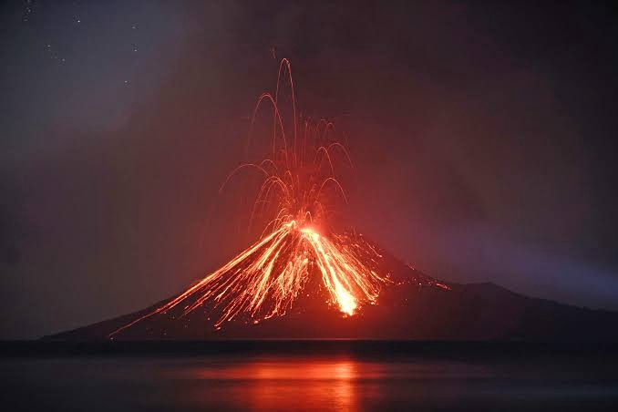
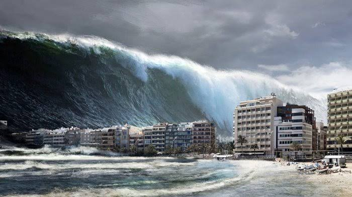

Sudah berjuta-juta tahun lamanya bumi menjadi tempat tinggal berbagai makhluk hidup maupun benda mati yang ada di dalamnya. Telah banyak zaman yang telah ia lewati dengan kurun waktu yang sangat panjang, mulai dari zaman batu hingga zaman serba jitu.
Seiring berjalannya waktu, setiap zaman selalu diikuti dengan berbagai peristiwa alam seperti perubahan iklim, bencana alam, dan berbagai peristiwa alam lainnya.Namun, pernahkah kita bertanya mengapa peristiwa alam tersebut terus terjadi dari dulu hingga sekarang?
Jika kita perhatikan dengan saksama, berbagai peristiwa alam tersebut terjadi disebabkan oleh penyesuaian diri dari berbagai proses alam yang berkesinambungan.
Ada banyak cara alam semesta ini menyesuaikan diri dengan berbagai peristiwa yang terjadi di dalamnya. Salah satu contohnya ialah letusan gunung api yang terjadi akibat adanya endapan magma di dalam perut bumi yang didorong keluar oleh gas yang bertekanan tinggi. Secara tidak langsung, bencana tersebut merupakan upaya penyesuaian antara magma dengan perut bumi sehingga menghasilkan peristiwa letusan gunung yang apabila letusan tersebut tidak terjadi, maka akan berdampak pada hal yang jauh lebih berbahaya dari yang kita duga. Hal tersebut merupakan salah satu upaya alam semesta dalam mencapai keseimbangan.
Begitu pula dengan berbagai upaya lainnya yang terjadi di dunia ini untuk mencapai keseimbangan sesuai dengan kodratnya masing-masing. Sebab jika kita perhatikan lebih luas, sebenarnya bukan hanya alam saja yang selalu melakukan penyesuaian terhadap berbagai peristiwa yang terjadi, akan tetapi segala hal di dunia ini pun butuh penyesuaian terhadap berbagai peristiwa yang terjadi pada perannya masing-masing yang tak lain dan tak bukan ialah untuk mencapai dan menjaga keseimbangan antara hubungannya dengan berbagai unsur lainnya, mulai dari lingkup molekul hingga biosfer sekalipun.
“Yang telah menciptakan tujuh langit berlapis-lapis. Kamu sekali-kali tidak melihat pada ciptaan Tuhan Yang Maha Pemurah sesuatu yang tidak seimbang. Maka lihatlah berulang-ulang, adakah kamu lihat sesuatu yang tidak seimbang? Kemudian pandanglah sekali lagi niscaya penglihatanmu akan kembali kepadamu dengan tidak menemukan sesuatu cacat dan penglihatanmu itupun dalam keadaan payah.” (Q.S. Al-Mulk : 3–4)
Tuhan sudah mengatur sedemikian rupa semua makhluk ciptaan-Nya dengan berbagai upayanya dalam menggapai keseimbangan. Tak luput walau unsur terkecil sekalipun. Sebuah karunia dengan konsep yang amat sangat sederhana namun sangat dibutuhkan untuk menjaga kelangsungan dari berbagai kehidupan di dunia ini. Manakala terdapat suatu kerusakan pada sistem tersebut, maka akan menimbulkan dampak negatif terhadap keseimbangan dari kasus yang terkait, baik secara langsung maupun tidak langsung.
Namun, ketidakseimbangan yang diakibatkan oleh kerusakan tersebut masih dapat diatasi oleh alam dengan sendirinya tergantung pada tingkat kerusakan yang berdampak pada keseimbangan tersebut, seperti yang disebutkan dalam hukum homeostasis atau yang biasa dikenal dengan hukum kelentingan.
Homeostasis merupakan proses atau mekanisme yang dilakukan alam semesta dan seisinya secara otomatis dalam mempertahankan kondisi konstan agar tetap dalam keadaan normal atau seimbang meski terjadi perubahan pada lingkungan di dalam atau luarnya dengan batasan tertentu. Yang mana jika perubahan tersebut melewati batasnya, maka akan sangat sulit dalam memulihkan keseimbangannya kembali.
Maka dari itu diperlukan upaya dalam menjaga eksistensi keseimbangan agar keberlangsungan proses kehidupan di alam semesta ini tetap terjaga dengan baik.
Seperti halnya beberapa contoh sederhana akan pentingnya eksistensi keseimbangan dalam berbagai kasus berikut:
Serta masih banyak lagi contoh penerapan kesimbangan dalam luasnya alam semesta dan kehidupan yang kita jalani ini, baik yang terjadi dengan campur tangan makhluk maupun yang terjadi dengan sendirinya sesuai dengan kodratnya yang telah ditetapkan oleh Sang Pencipta Alam.
Sama halnya dengan berbagai bencana yang kian banyak menerpa bumi kita ini. Seperti yang kita ketahui sebelumnya, bahwa berbagai peristiwa alam yang terjadi di dunia ini (khususnya bencana alam) bertujuan untuk menyesuaikan terhadap berbagai peristiwa lain agar tercapai keseimbangan di antaranya. Namun jika kita perhatikan dalam sudut pandang lain, peristiwa tersebut terjadi bukan hanya untuk menggapai keseimbangan secara natural.
Lalu, apa lagi penyebab terjadinya bencana tersebut? Mari kita perhatikan secarik lirik yang tersurat dalam syair musisi kita, Ebiet G Ade, yang berbunyi:
“Barangkali di sana ada jawabnyaYap, seperti lirik dalam lagu berjudul “Berita kepada Kawan” di atas, bencana yang kian banyak menerpa bumi kita ini tidak semata-mata hanya bertujuan untuk mencapai keseimbangan alam secara natural, akan tetapi juga merupakan cara Tuhan untuk memberi peringatan kepada hamba-hamba-Nya akan kelalaian yang telah kita perbuat.
Sebab kita sebagai manusia telah diberikan amanah yang sangat besar oleh Tuhan, yaitu agar menjadi pemimpin di muka bumi ini. Sebagai peran utama dalam perputaran roda kehidupan di atas bumi. Sebagai makhluk yang diberikan karunia berupa akal.
Namun telah banyak kerusakan yang kita lakukan di atas muka bumi ini. Telah banyak keseimbangan yang kita rusak sehingga keberlangsungan akan kehidupan di atas muka bumi kian terancam. Hanya karena keserakahan duniawi yang membutakan. Bahkan terhadap amanah yang diberikan saja kita lalai dalam menjaganya.
Maka dari itu diturunkanlah azab berupa bencana di atas muka bumi ini. Untuk memberikan peringatan kepada manusia dengan tujuan agar manusia sadar akan perbuatan yang telah dilakukan selama ini, akan kelalaian terhadap amanah yang telah diberikan. Juga untuk memulihkan kembali keseimbangan di atas muka bumi yang telah rusak akibat perbuatan manusia.
Dengan begitu kita harus benar-benar sadar akan pentingnya peran kita dalam menjalani kehidupan di dunia ini. Tinggal memilih apakah kita akan menjaga selalu amanah yang dititipkan oleh Tuhan, atau mengabaikannya bahkan mengkhianati amanah yang telah dititipkan oleh-Nya. Sebab apapun perbuatan yang kita lakukan di dunia ini, dampaknya akan kembali kepada kita sendiri.
Jika kita tetap menjaga keseimbangan di alam semesta ini dengan baik, maka keberlangsungan kehidupan dalam semesta ini akan berjalan dengan baik pula. Namun jika kita tidak menjaganya dengan baik, bahkan merusaknya atas dasar nafsu duniawi, maka tunggulah saatnya di mana ketidakseimbangan alam semesta akan melampaui batas kelentingannya, sehingga ketika sampai pada puncak kehancurannya, maka akan sangat sulit bagi kita dalam mengendalikannya bahkan memulihkan keseimbangannya kembali.
Namun, akan sangat mudah bagi Tuhan dalam memerintahkan alam semesta untuk ‘memulihkan’ serta mengembalikan keseimbangan yang ada di dalamnya dengan cara apapun agar alam semesta kembali membaik. Tentunya dengan ‘pemulihan’ besar-besaran seperti kondisi yang kita rasakan saat ini.
Pada akhirnya, berbagai aspek kehidupan di dunia ini takkan pernah luput dari penyesuaian untuk mencapai keseimbangan dengan tujuan menghindari hal yang lebih buruk dan menuju kepada hal yang lebih baik.
Follow my Medium to get more of my stories